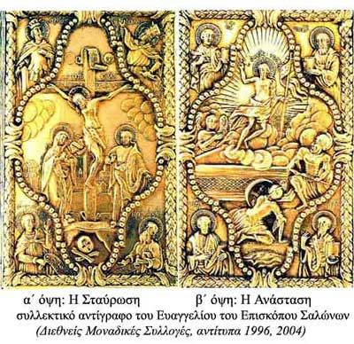

| Το Ευαγγέλιο του Ησαΐα, σύμβολο του μεγάλου ξεσηκωμού στη Ρούμελη  Ο Επίσκοπος Σαλώνων σκοτώθηκε στη μάχη της Χαλκομάτας, στις 24 Απριλίου 1821. Πάνω του βρέθηκε ένα μικρό Ευαγγέλιο, τόσο μικρό που να χωρά στον κόρφο του. Το είχε φέρει από την Κωνσταντινούπολη και λέγεται ότι σ’ αυτό έδιναν οι Ρουμελιώτες τον ιερό όρκο της Φιλικής Εταιρείας. Σ’ αυτό η παράδοση θέλει να έχουν ορκιστεί ο Πανουργιάς, ο Διάκος και ο Δυοβουνιώτης, τα πρωτοπαλίκαρα του Παρνασσού. Το Ευαγγέλιο από τη μέρα του θανάτου του φυλάσσεται στη Μονή του Οσίου Λουκά. |
||